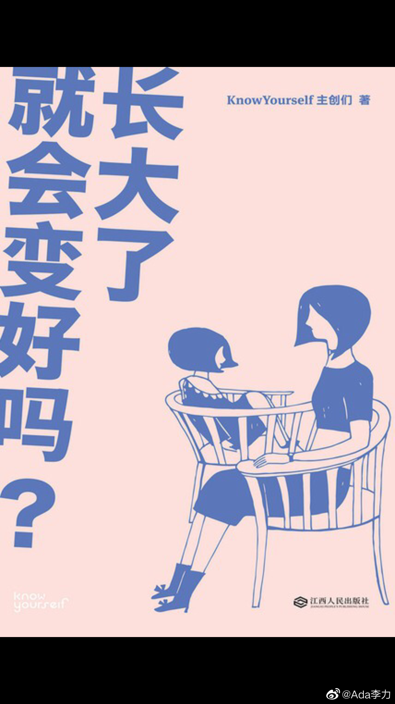

选这本《长大了就会变好吗》读，是因为针对18-25岁阶段困惑的心理学指南书，我想多了解些女儿成长过程中会经历的问题。#姣姣#让我给她讲讲书里的内容。
她还是小时候习惯，不愿意自己读，而喜欢听我讲。我就负面情绪聊聊了些读后感：
我们社会文化会否定表达负面情绪，比如愤怒，悲伤等，成人要求能抑制这些负面情绪，但负面情绪有很多积极作用，比如愤怒会提醒你，要么是你利益被侵占了，要么是自我边界受损，而且愤怒会提供力量。
但负面情绪里有两种是没有任何益处的：无望感和无价值感。无望感是没有了希望，会产生习得性无助行为，在动物实验里，狗如果患上习得性无助，即使没有铁链再锁着，它被电击也不会逃跑，只是受着。而无价值感是一种自挫性的情绪，来源于没完没了的自我批评，认为自我的存在没有任何意义和价值。遭受过PUA的女生，很容易产生无价值感。
我说：所以，姣姣，你要远离那些喜欢批评和打击你的人，那些人基本都是垃圾。
姣姣：我能分辨那些话里哪些对哪些不对就行，对的听，不对的我当耳旁风呗
我：姣姣，智慧是什么，就是辨别对错啊，这是很多人一辈子都在磨练的东西，你觉得你能从别人的批评里，筛出真伪吗？况且，喜欢批评指责别人的，通常都很low, 你更不用把这些人的话当回事儿。
她还是小时候习惯，不愿意自己读，而喜欢听我讲。我就负面情绪聊聊了些读后感：
我们社会文化会否定表达负面情绪，比如愤怒，悲伤等，成人要求能抑制这些负面情绪，但负面情绪有很多积极作用，比如愤怒会提醒你，要么是你利益被侵占了，要么是自我边界受损，而且愤怒会提供力量。
但负面情绪里有两种是没有任何益处的：无望感和无价值感。无望感是没有了希望，会产生习得性无助行为，在动物实验里，狗如果患上习得性无助，即使没有铁链再锁着，它被电击也不会逃跑，只是受着。而无价值感是一种自挫性的情绪，来源于没完没了的自我批评，认为自我的存在没有任何意义和价值。遭受过PUA的女生，很容易产生无价值感。
我说：所以，姣姣，你要远离那些喜欢批评和打击你的人，那些人基本都是垃圾。
姣姣：我能分辨那些话里哪些对哪些不对就行，对的听，不对的我当耳旁风呗
我：姣姣，智慧是什么，就是辨别对错啊，这是很多人一辈子都在磨练的东西，你觉得你能从别人的批评里，筛出真伪吗？况且，喜欢批评指责别人的，通常都很low, 你更不用把这些人的话当回事儿。
- 